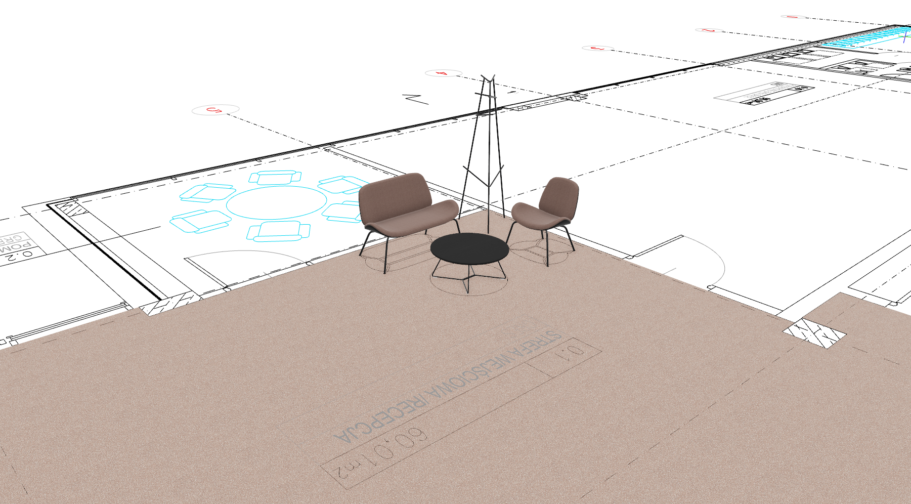

Dwa warianty projektu — Optima i Maks — oparte na spójnej palecie produktów, różniące się zakresem wyposażenia.
Europejski lider
mebli biurowych i przestrzeni publicznych
Nowy Styl to producent mebli biurowych i rozwiązań do przestrzeni publicznych działający w ponad 70 krajach. Tworzymy inspirujące środowiska pracy, łącząc ergonomię, estetykę i trwałość. Nasza oferta obejmuje pełen ekosystem wyposażenia biura — od stanowisk pracy przez strefy spotkań, po przestrzenie wypoczynkowe — uzupełniony o kompleksowe usługi projektowe i logistyczne.
Działamy według zasady „Work is not a place — it's a feeling." Nasze projekty wspierają dobrostan pracowników, wzmacniają kulturę organizacyjną i budują marki firm.
Produkcja
Własne zakłady produkcyjne w Polsce, Niemczech i Ukrainie. Pełna kontrola jakości na każdym etapie.
Projektowanie
Usługi doradztwa i projektowania Workplace — od analizy potrzeb po gotową aranżację i montaż.
Zrównoważony rozwój
Program use2, materiały z certyfikowanych lasów FSC, recykling mebli, minimalizacja śladu CO₂.
Wyróżnienia
German Design Award, Red Dot, IF Design Award — setki nagród za innowacje i wzornictwo.
🚪 Hol & Recepcja
Lada Velum, sofa Tilkka, stolik kawowy — reprezentacyjne wejście
💻 Open Space — Parter
Biurka CS5040, krzesła Xilium, lockery / szafy ES
📊 Sale konferencyjne
Stoły CS5040 A-Leg, krzesła Flesco i Vapaa — duża sala i mała salka
☕ Pomieszczenie socjalne
Sofa Naudu, szafki Easy Space, Aplo Cabinet, Flowerpot
🎧 Strefa akustyczna
Kabiny SPIX Meet Pod (Maks, 4os.) lub Phone Pod (Optima, 1os.)
🏢 Open Space — Piętro
Kontynuacja stanowisk pracy, szafy, szatnia pracownicza



🔵 Wariant OPTIMA
Zoptymalizowany dobór produktów z tych samych linii. System biurek CS5040 w obu wariantach, SPIX Phone Pod zamiast Meet Pod, ES Cabinet zamiast Puzlo Locker. Pełna funkcjonalność i zachowanie większej przestrzeni między stanowiskami.
🟡 Wariant MAKS
Pełne wyposażenie z flagowych wariantów każdej linii. CS5040 z media portami, Puzlo Locker ×14, SPIX Meet Pod ×2. Więcej stanowisk, więcej możliwości konfiguracji.
📐 Zakres projektu
Parter (hol, recepcja, open space, 2 sale konferencyjne, socjalne/izolacja) + Piętro (open space + szatnia). Łącznie ok. 80–100 stanowisk pracy.

Charakterystyka Optima
CS5040 Desk I-Leg, SPIX Phone Pod ×3, szafy Easy Space. Rozwiązanie stawiające na większą przestrzeń indywidualną — ta sama estetyka, zoptymalizowany zakres wyposażenia.

Charakterystyka Maks
CS5040 z panelami i media portami, Puzlo Locker SQ ×14, SPIX Meet Pod 4U ×2. Pełne wyposażenie z kabiną spotkań i bogatą infrastrukturą kablową.


🪑 Produkty — Hol & Recepcja (oba warianty)
VELUM — lada recepcyjna, moduł prostokątny wysoki, 2000×800×1120 mm, MFC
XILIUM DUO-BACK — krzesło obrotowe dla recepcjonisty, certyfikat GS
TILKKA SOFA 4L — sofa 2-os. dla gości, 1180×720 mm, tkanina Cura
TILKKA TABLE LOUNGE 35 — stolik kawowy okrągły ⌀800, H350 mm
💡 Myśl projektowa
Strefa wejścia łączy reprezentacyjność z komfortem gości. Wysoki moduł lady Velum tworzy naturalną barierę wizualną. Sofa Tilkka z okrągłym stolikiem tworzy przytulną poczekalnię — biofiliczy design nawiązuje do natury, co wzmacnia pierwsze wrażenie.
Kolorystyka neutralna: MFC Acacia Light (NJ) lub Neutral Kraft (NK) — spójna z całym biurem.


Open Space — mniejszy zakres
43 krzesła Xilium DUO-BACK · CS5040 Desk · ES Cabinet
Open Space — pełen zakres
48 krzeseł Xilium DUO-BACK · CS5040 · Puzlo Locker
📌 Wspólny mianownik obu wariantów
Oba warianty korzystają z tego samego systemu krzeseł Xilium DUO-BACK oraz biurek CS5040 — gwarantuje to jednolity poziom ergonomii dla każdego pracownika. Kluczowa różnica to liczba stanowisk (43 vs 48) oraz rozwiązanie do przechowywania (lockery vs szafy). Paleta MFC jest harmonijna w obu wersjach — różni się odcieniem, nie charakterem.


Sale konferencyjne
Sale konferencyjne
☕ Pomieszczenie socjalne — oba warianty
Naudu Sofa 4L — sofa 2-os., tkanina Cura, czarna noga
Aplo Cabinet Set S3 — zestaw szafek 1180×400 mm (Maks)
Naudu Armchair 4L — 2 fotele (Optima)
Flowerpot Case — osłona Multo, MFC Acacia Light
Tilkka Table Mini — stolik ⌀380, H545 mm (Optima)
🗄️ Szatnia i przechowywanie
Easy Space Wardrobe D1 — szafa ubraniowa 6OH, prawo- i lewostronna, ×8 szt.
Easy Space Cabinet D2 — szafa 6OH ×3 + 2OH ×1
Easy Space Open Cabinet — regał otwarty 6OH ×1–2
W obu wariantach identyczny zakres szatni.


CS5040 I-Leg RC (Optima): biurka 1400–1800 mm tej samej rodziny — układ dostosowany do większej przestrzeni per pracownik, bez zintegrowanego media portu (grommet owalny).


Easy Space Cabinet D2 (Optima): szafy pracownicze 5OH MFC — modułowe, wielokonfigurowalny system szaf, wardrobe i regałów.

Tilkka Sofa 4L — sofa 2-os. 1180×720 mm w recepcji, tkanina Cura. Obydwie identyczne w obu wariantach projektu.